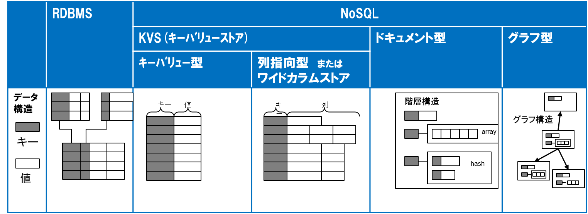

斜体
強調
インラインコード

図3-1.IoTではまず多数のセンサーからのビッグデータ収集を行う。
| Right | Left | Center |
|---|---|---|
| Computer | $1600 | one |
| Phone | $12 | three |
| Pipe | $1 | eleven |
リスト3-1.プログラムのサンプル
import xxx
public static void main(String argv[]){
System.out.println("hello world");
}
コラム3-1.データレイクとは データレイクは・・・
ノート3-1.JSONとは JSONとは・・・
これに関しては、リスト3-1のサンプルプログラムを参照してください。